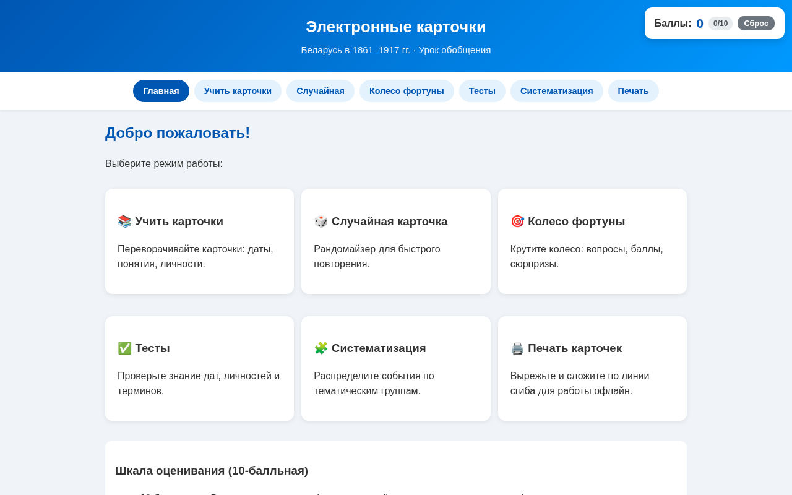
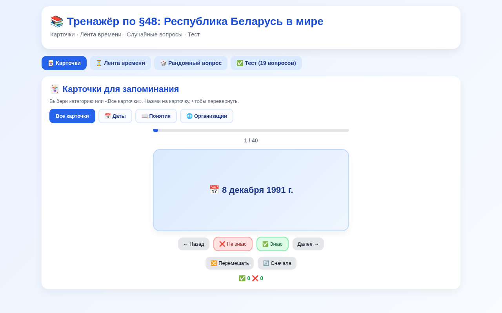
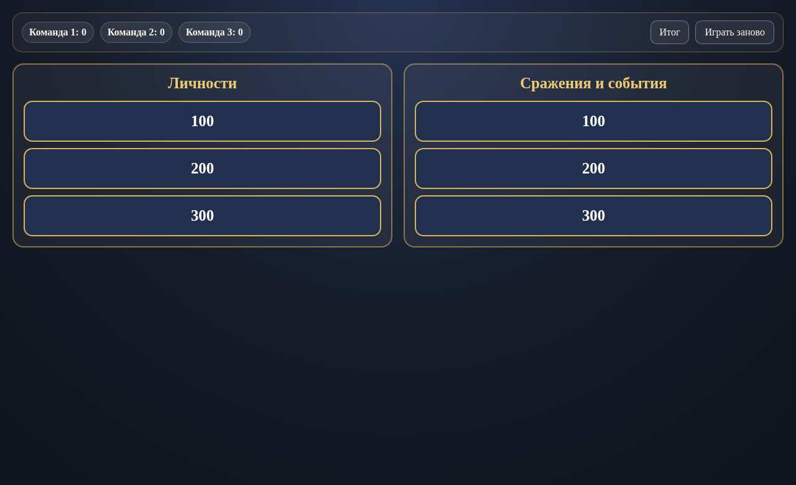
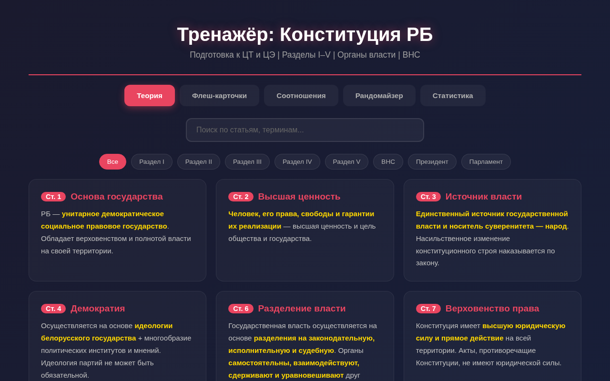
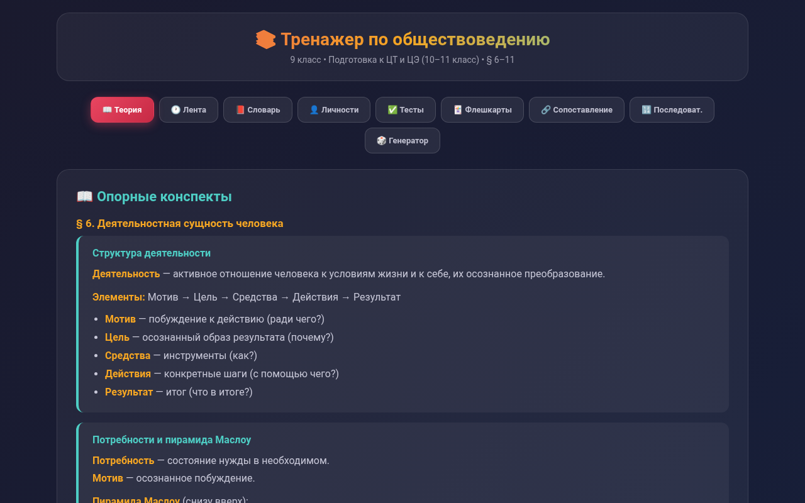
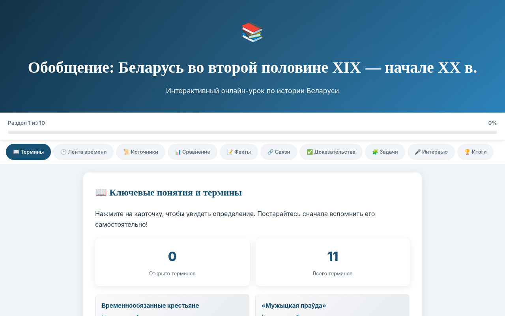
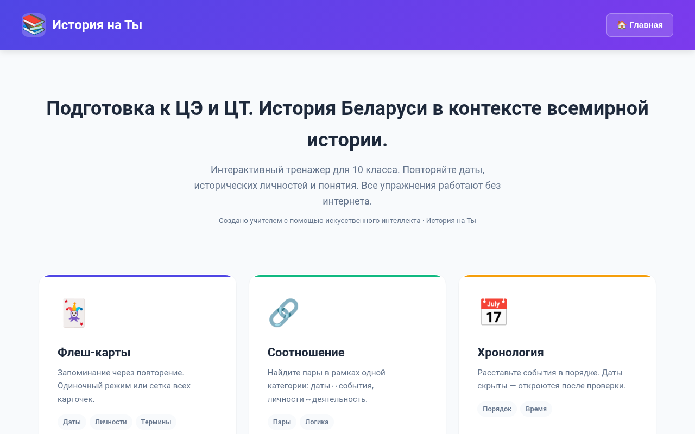
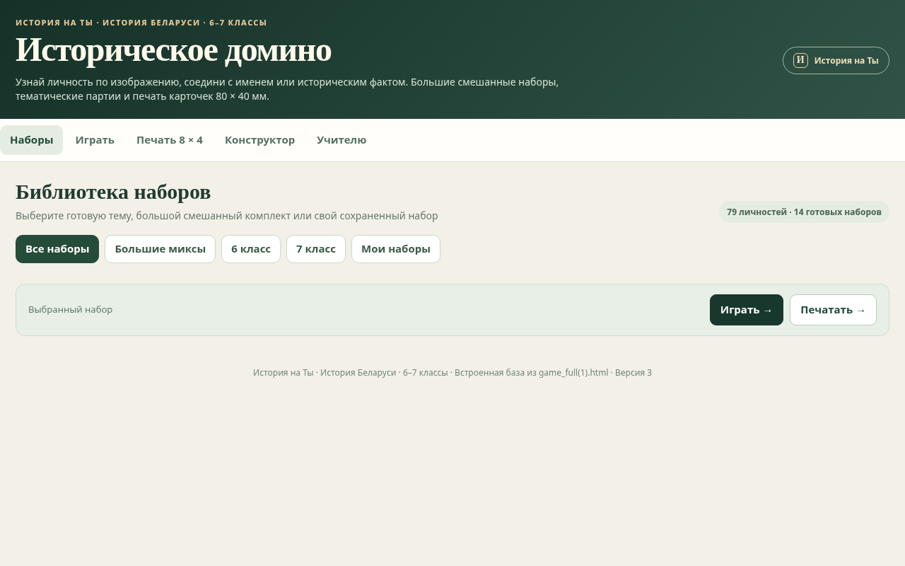
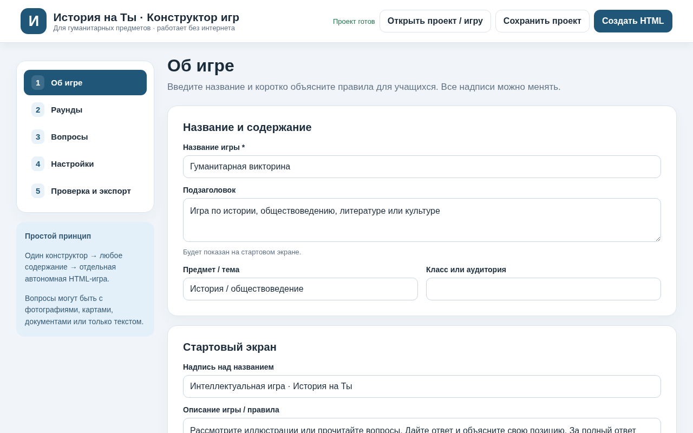

Электронные карточки. 1861–1917
Открыть карточку → случайный вопрос → «Колесо фортуны» → печать. Показать, как бумажный комплект получает новые функции.
Запустить карточки →Учитель истории высшей квалификационной категории
Сушко Людмила Александровна
ГУО «Средняя школа № 54 г. Гомеля»
История · Обществоведение · Работа без программирования
Пять утверждений об ИИ и интерактивных тренажерах. Сначала выберите ответ, затем прочитайте объяснение. Правильные ответы заранее не показываются.
Что такое вайбкодинг, какие ИИ использовать и какие педагогические задачи помогает решать интерактивный тренажер.
Это создание цифрового продукта через запросы к искусственному интеллекту на естественном языке: учитель описывает задачу, получает рабочий образец, проверяет его и вносит правки.
Для апробации удобно использовать ИИ, рекомендованные АО: DeepSeek, Kimi, Qwen. Подойдут и другие сервисы, если они умеют работать с файлами, изображениями и длинными запросами.
Важно: независимо от выбранного сервиса учитель проверяет извлеченные сведения, правильность ответов и удобство интерфейса.
Случайные карточки, домино, блиц-вопросы и разминка помогают быстро включить в работу весь класс.
Соответствия, хронология, понятия и даты делают повторение более наглядным и деятельностным.
Ученик может работать в своем темпе, повторять ошибки и получать задания разного уровня сложности.
Автономный HTML-файл открывается без интернета и подходит для домашнего повторения и самопроверки.
Тренажер удобен для систематического повторения дат, понятий, персоналий и типовых заданий.
Это способ быстрее тиражировать материалы, обновлять задания и сохранять удачные разработки для разных классов и тем.
Два примера для показа вживую. Показывайте действие, а не пролистывайте все разделы.

Открыть карточку → случайный вопрос → «Колесо фортуны» → печать. Показать, как бумажный комплект получает новые функции.
Запустить карточки →
Переворачиваемые карточки, лента времени, рандомайзер и тест — пример преобразования содержания одного параграфа.
Запустить тренажер →Другие примеры открываются в разделе «Делюсь опытом». Историческое и предметное содержание нужно сверять с актуальными учебниками и нормативными источниками.
Применяем единый алгоритм из памятки. Участники выбирают одну педагогическую задачу, загружают учебную карточку, фото или файл и проверяют извлеченные сведения.
Шаг 1: сначала проверь материалы, не пиши код. После подтверждения «ОК» — переход к выбранному маршруту.
Проверяем факты, неоднозначные ответы, работу кнопок, начисление баллов, мобильный режим и автономность.
В раздатке предложены три направления. Достаточно одного небольшого результата для первой пробы. Кнопки ниже копируют соответствующий учебный промпт.
Даты, понятия и исторические личности; самооценка и возвращение к трудным карточкам.
Подходит для разминки, групповой работы и быстрого повторения. Образец такого результата — викторина «1812 год» ниже.
Для применения исторического и обществоведческого знания в учебных ситуациях.
Скопируйте нужный промпт и вставьте его в чат с ИИ.
Реальный пример: работа с учебным материалом по статьям 1, 2, 3, 6, 7 Конституции Республики Беларусь, получение кода, педагогический аудит и исправление. Нажмите на изображение, чтобы рассмотреть его крупнее.
Исходные сведения и подробный запрос в DeepSeek.
ИИ выдает код тренажера. Затем просим проверить результат.
Проверяем задания, соответствие статьям и техническое качество.
После замечаний ИИ выдает полную обновленную версию.
Проверяем готовое задание, обратную связь и подсказки.
Снимки показывают процесс разработки. Текст статей и задания требуют проверки по действующей редакции Конституции перед использованием на уроке.
Три памятки и тренировочные материалы участника: их можно просмотреть в PDF или сохранить в формате Word для дальнейшей работы.
«От своего файла — к HTML-тренажеру»
Алгоритм и подробные промпты для любого предметного содержания.
Четыре сценария, основанные на конкретном учебном материале.
Выберите PDF для просмотра или Word для редактирования. Универсальные промпты также можно копировать прямо из раздела «Практикум».
Показываем готовую игру, ее исходную карточку и точный учебный промпт. Это один конкретный маршрут: от материала учителя к автономному HTML.

Две категории: «Личности» и «Сражения и события». Шесть заданий, три команды, отдельная кнопка показа ответа, начисление баллов и итог.
Открыть образец игры ↗Ниже исходная карточка «Беларусь в период войны 1812 г.» из тренировочных материалов участника. В ней семь пар. Для опытной викторины по учебному промпту выбраны шесть вопросов — по три в двух категориях.
| Историческая личность | Роль или событие |
|---|---|
| Наполеон Бонапарт | Возглавлял французскую армию в походе 1812 г. |
| Александр I | Император Российской империи в период войны 1812 г. |
| Петр Багратион | Командовал 2-й Западной армией. |
| Николай Раевский | Под его командованием русские войска действовали у Салтановки. |
| Петр Витгенштейн | Командовал русскими войсками в сражении под Клястицами. |
| Александр Тормасов | Войска под его командованием одержали победу под Кобрином. |
| Яков Кульнёв | Герой сражения под Клястицами, отдавший свой мундир и награды солдату для поддержания стойкости солдат. |
Шаг 1: изучить исходную карточку, предложить категории и вопросы, дождаться «ОК». Шаг 2: создать автономную командную викторину, в которой ответ и баллы появляются по действиям ведущего.
Открываем HTML-игру, сравниваем содержание с карточкой, проверяем кнопки, счет и работу без интернета. Здесь же — инструкция по сохранению кода через «Блокнот».
Работаем по памятке участника: открываем файл, сверяем с источником, исправляем ошибки и проверяем повторно.
Способ 1. Скачать готовый файл. Если нейросеть предлагает кнопку Download, скачайте .html, откройте его в браузере и проверьте задания.
Способ 2. Сохранить код через «Блокнот». Если ИИ выдал код текстом, скопируйте его полностью и выполните пять шагов ниже.
.html, а не .txt или .html.txt. В окне сохранения выберите «Все файлы (*.*)».На скриншотах ниже показаны два варианта запуска «Блокнота»: через меню «Пуск» или через новый текстовый документ.
Пять скриншотов с Windows. Нажмите на изображение, чтобы увеличить и рассмотреть шаг. Если готовый .html уже скачан, переходите сразу к проверке в браузере.
Найдите его в меню «Пуск» → «Стандартные — Windows».
На рабочем столе: правая кнопка мыши → «Создать» → «Текстовый документ».
«Открыть с помощью» → «Блокнот». Вставьте полный HTML-код из ответа ИИ.
Меню «Файл» → «Сохранить как…»; укажите папку для тренажера.
Имя: trenazher.html. Тип: «Все файлы (*.*)». Кодировка: UTF-8. Нажмите «Сохранить».
.txt.trenazher.html в сохраненной папке. Откройте двойным щелчком или через «Открыть с помощью» → браузер.Коллекция интерактивных тренажеров и игр «История на Ты»: разные классы, темы и методические задачи. Откройте интересующий пример в отдельной вкладке.
Флеш-карты, рандомайзер, колесо, сортировка, печать карточек.
Открыть →Карточки, лента времени, случайные вопросы и тест 19 заданий.
Открыть →
Теория, карточки, установление соответствий, вопросы и статистика.
Открыть →
Опорные конспекты, словарь, личности, тесты и упражнения.
Открыть →
Обобщение: хронология, источники, причинно-следственные связи, проверка.
Открыть →
Большая база для самостоятельного повторения, соотношения, хронология и печать.
Открыть →
Портрет — имя / факт, тематические партии, печать и соревновательный режим.
Открыть →
Редактирование раундов, вопросы с изображениями, баллы, отдельный HTML-файл.
Открыть →Две категории, шесть вопросов, выбор команды, начисление баллов и итог игры.
Открыть →Два цифровых подарка участникам и презентация мастер-класса. Памятки и тренировочные карточки выдаются отдельно в печатном виде.
Авторский проект по историческим личностям 6–7 классов: игры и тренировка узнавания исторических образов.
Перейти к проекту ↗Самостоятельно создавайте командные викторины по истории, обществоведению и другим гуманитарным темам.
Открыть конструктор →Обновленная презентация мастер-класса с титульным слайдом, учебными примерами и материалами участника.
Нейросеть помогает писать код. Учитель отвечает за то, чему этот код учит.
Оцените четыре результата мастер-класса на интерактивной мишени. Ответы формируют общую мишень в прямом эфире и сохраняются в таблицу для методического анализа.
Заполнить мишень ↗